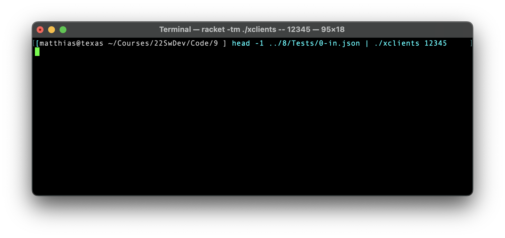

9 —
Due Thursday, 01 December 2022, 11:59:59pm
Delivery Place the product of this week’s milestone into your git repo as follows:
for the Programming Task, modify the referee, its state, and the actual player as needed. Then describe the changes with concise prose and place the resulting document, revisions.md, into Maze/Players/ Maze/Planning/;
for the Runnable task, place xserver and xclients into a top-level repo directory named 9
Programming Task The co-CEOs received a request from their investors to make the game a bit more interesting. Specifically, the investors would like players to chase down several treasures, not just one.
Here is the precise specification. After the referee receives the n players, it assigns them homes. All potential goals are arranged as a ordered sequence. The first n elements are removed from this sequence and assigned to the players as goals during setup. Every time a player reaches a goal tile, the referee removes the next goals from the front of the sequence and assigns it to the player that just landed on a goal tile; to inform the player of the chosen goal, the referee uses the setup method in the usual manner. Once the sequence is empty, players are no longer assigned a new goal but are told to go home.
for all players that have collected the same highest number of treasures—
equivalently, have visited the same number of goals— the referee determines their Euclidean distance to their next “goal,”The word ``goal'' is overloaded here. which is either a home or a treasure coordinate. The winners are those that share the same minimal distance. If the game-terminating player is one of the players with the highest number of collected treasures, it is the sole winner.
You may need to adapt your referee method that accepts a players and an already formed state, which includes player knowledge with the initially assigned goal.
xserver, which starts your server, and
xclients, which launches a number of clients and points them to a server.
Well-formed and Valid You may assume that all (system-configurations) inputs to your test harnesses from STDIN are well-formed and valid. A well-formed piece of JSON satisfies the grammar; such a piece is valid if it also satisfies all the side constraints of a schema specification.
Both programs are launched with a port argument on the command line. For xclients, the command line may also specify an IP address, as an optional second argument; the default is local host (127.0.0.1).
The xclients script turns the player specifications into independently running players; you may use threads in your language or Linux processes if you write this script as a plain shell script.
If these threads or processes are launched without precaution, the test is going to run in a non-deterministic fashion and will yield non-deterministic -- and therefore incomparable -- results. To reduce the likelihood of a non-deterministic outcome, the xclients script will wait for 3s between launching clients. In our test runs, the server will launch in time to allow the first client to connect first, but not necessarily on the first try.
The xserver spawns the server as another independent thread or process that is independent of the client. The server waits for the players to sign up and passes their local representation plus the given RefereeState to the referee. The latter runs a game and hands the result of running the game back to the server, which renders it as a JSON value to STDOUT.
Configure your referee so that it grants each player 4.0s per method call. This time period is long but it allows for TCP hiccups, especially with the take-turn method.
Critical Supplement Our tests will come with the player specs set up so that the youngest player matches the first player in the given state and the oldest player matches the last player in the given state. The tests are by running the test cases as is through the server-client set up and comparing it with the corresponding state run via the referee.
Running the Scripts Since the test inputs from 8 —

This first screenshot displays a single shell script line. On the left of the pipe symbol, the head function extracts the first line from a test-input file. The pipe re-directs STDOUT of head to STDIN of he function to the right side of the pipe symbol. On the right side, the line invokes the sclients script, which is informed by its command-line argument that it should connect all of the players to a server on port 12345 (on the same machine).

This second screenshot shows how to use Unix’s tail function to extract the second line of the same test-input file as in the first screenshot. Its output is piped into xserver, which makes its server listen for client connections on port 12345. Before the server shuts down, it renders the result of running the game to STDOUT. To find out whether this result is correct, you can use cat to print the test-output file to STDOUT. Eyeballing the two lines suggests that the experiment produced the desired result.
Note This is not a test.
Note You may to wish write xclients as a shell (bash) script that spawns Linux processes or as a short TAHBPL program that spins up threads. In either case, the idea is to spawn the server and the clients as parallel programs to mimic a distributed setting as much as possible using a single machine.